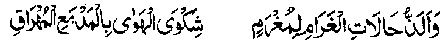
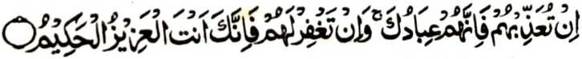
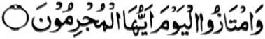
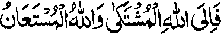
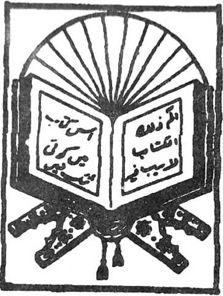

Oriyan o kasoti o manga ngipen a Miswak (gadong a sapak o satiman a kayo a ipezogi ko ngipen) ago oriyan o kapaka-pagabedas, na ontod so tao ko darepa a lomilintad a mbibilangatao ago mangangalimbaba-an sarta a somangor sa Qiblat (maka-aantap sa Ka’aba sa Mecca). Oriyan niyan na so poso iyan na zasalimbotawan, go thotomangked ago kapapadaleman sa kao-oyat a domada-it sangkoto a maola-ola, na oriyan noto na batiya so tao sa pipikira niyan a pembatiya-an niyan noto sa hadapan o Allah a Mala.
Opama ka zabota o tao so ma-ana niyan, na pendekha sekaniyan sa ipephamimikaran niyan ko Ayaat a makapantag ko diyandi ago kapedi go pamangeniya niyan so rila Iyan ago gagao. Si-i ko manga Ayaat a makatotoro sa siksa ago tapa-os, na lindong so tao si-i Rekaniyan, sabap sa liyo Rekaniyan na da-a a Phakatabang. Si-i ko manga Ayaat a makatotoro ko Limo iyan ago so Kasosoti Niyan, na tharo-a o tao so “Subhaanallah” (Soti so Allah). Opama ka di kazarta o tao a kasegad so kapembatiya iyan sa Qur’an na tegela niyan a kapakasegad iyan sa maito bo.

“Si-i ko sakatao a pephangabaya, na aya masa a piphaporo-an a kapipiya ginawa na giyoto so, igira sa hadapan o pekhababaya-an niyan, na mapepeno sekaniyan a kazendit ago so kapakasegad sa tanto a mala.”
Di penggaga-an matiya so tao inonta bo o ba niyan phelangagen so Qur’an. Patot ko Qur’an so kibetaden non ko mipapanggao a darepa o di si-i ko Lihar (titibaba-an a pebatogan sa Qur’an igira pembatiya-an) o di na ibatog sa olona. Di khapakay o ba pakimbitiyara-i so tao sa salakao igira pembatiya.
Opama khategel so tao a makimbitiyara-i sa salakao, na lekhebi niyan da-an so Qur’an na go bo pakimbitiyara-i, oriyan niyan na batiya-a niyan so Ta’awwudh (so ‘A’odho Billahi minas Shaitaanir Rajeem), na go bo batiya pharoman sa Qur’an. O so manga tao a maka-oobay na aden a gi-i ran nggalebeken, na taralebi so kabatiya sa maipes na so salakao si-i na taralebi so kabatiya sa matanog.
So manga Masha-ikh (manga Lokes tano) na miya-aloy siran sa nem a mapayag ago nem a masolen a bitikan (Adab) o pada-adat ko kabatiya sa Qur’an, a pagaloin ko oriyan na-i:
Ibarat ko ika pat (so kapamimikira ko ma-ana):

“O siksa-a Ngka siran, na mata-an! a siran na manga oripen Ka. Na o napi-i Ngka siran na mata-an! a Seka na Seka so Mabager, a Maongangen.” (Surah Al-Maidah: 118)

“Na sibay kano sa Alongan naya! Hay manga baradosa!” (Surah Yasin: 59)
Phamangenin aken, sabap ko Limo ago Gagao o Allah, na kabegan tano sa kapakagaga ko kabatiya sa Qur’an mokit sangka-iya a miyanga-aaloy a manga bitikan a pada-adat.
So kilangagen ko saba-ad ko Qur’an a pagosaren ko gi-i kinggolalanen ko Sambayang na paliyogat o omani Muslim, ogaid na so kilangagen ko langowan o Qur’an na Fardh-e-Kifayat (ma-ana benar ka paliyogat ko langon, ogaid na khapakay a ayabo a makanggola-ola on na so saba-ad. Opama da-a isa bo a Hafiz, na langon khadosa so manga Muslim). So Mulla Ali Qari (Rahmatullahi ‘Alaihi) na miyapanothol iyan pen a miyakathitayan ko Zarkashi a, si-i ko isa a inged o di na bandara inged, a daden a sakatao bo a pembatiya sa Qur’an, na so langon o manga tao sangkoto a inged na langon madodosa.
Sangka-iya masa a maliboteng ago kada a meleng a so manga Muslim na miyadadag siran den ko kala-an ko Agama Islam, na aya den a kepit o kadakelan na da-a bali niyan ago kalalalongan so kilangagen ko Qur’an ago baden ilang a masa ago sendod a pamikiran so gi-i kazalosawa ko manga katharo-on a di bo zaboten so ma-ana niyan. Opama ka giya-i bo-i kapakasosopak tano si-i ko paratiyaya, na aden a mala-a osayan a khisorat a makapantag si-i. Ogaid, na imanto na pembasa-ani so langon o manga ola-ola tano na langon mariribat go so langon o pamikiran tano na aya den reketano pephakadadag. Ay taman a kapakapemboko o tao ago ay taman a kala a kapaka-phagata-at iyan.

“Na si-i ko Allah a pephanonan tano ago si-i Rekaniyan tano phengeni sa tabang.”
